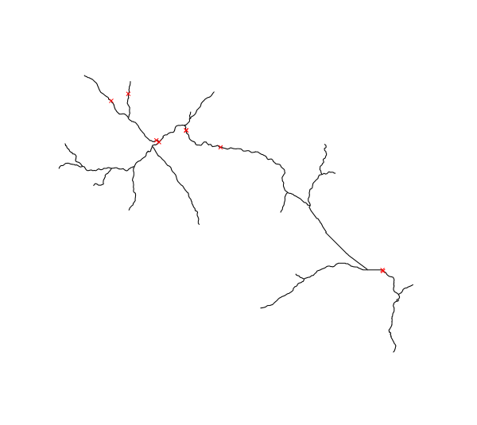

r.green.hydro.delplants deletes segments of river where there is an existing plant.
NOTES
This command is used to select the segments of river which are not already exploited by a plant or another structure.
The required inputs are the elevation raster map, the map with the streams and the one with the intakes and restitution of the existing plants. In option, it is possible to add the map with the intakes and restitution of the other structures such aqueducts or irrigation in order to delete these segments too.
It is necessary to verify in "Optional" that the intakes and restitution are well reported in the table of the input maps (hydro and other).
EXAMPLE
This example is based on the case-study of Mis valley in Belluno province, Veneto, Italy.

Input vector maps : streams of Mis Valley in black and intakes and restitution of existing plants in red
We use the following code to compute the available streams and obtain the next map :